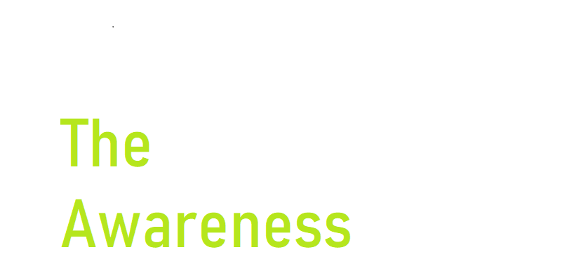

#Covid19#Awareness
Self-care
- If you feel sick you should rest, drink plenty of fluid, and eat nutritious food. Stay in a separate room from other family members, and use a dedicated bathroom
if possible. Clean and disinfect frequently touched surfaces.
- Everyone should keep a healthy lifestyle at home. Maintain a healthy diet, sleep, stay active, and make social contact with loved ones through the phone or
internet. Children need extra love and attention from adults during difficult times. Keep to regular routines and schedules as much as possible.
- It is normal to feel sad, stressed, or confused during a crisis. Talking to people you trust, such as friends and family, can help. If you feel overwhelmed,
talk to a health worker or counsellor.
- Physical distancing, good respiratory hygiene and hand washing are important examples of self-care actions you can take every day to protect against
COVID-19, and there are many other areas in which self care can make a difference to your health and well-being during the coronavirus disease pandemic.
Hey there fellowreader!Check out the symptoms of Covid19